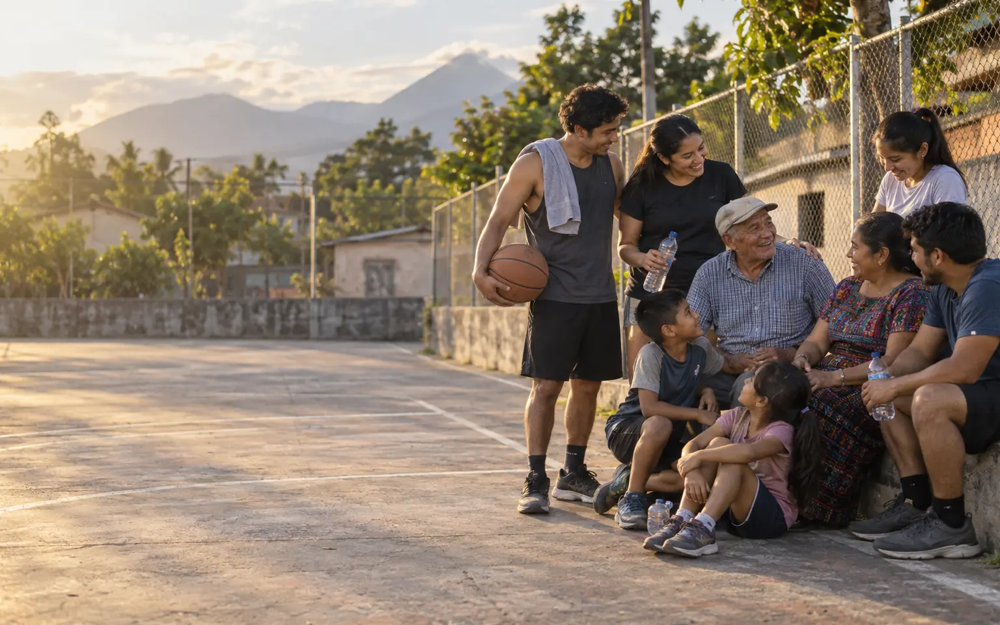

Que cada generación reciba un legado más fuerte que la anterior.
Promovemos una cultura familiar de ahorro, acceso solidario al crédito y apoyo mutuo, con responsabilidad compartida.
De una cancha a un legado de generaciones
Somos una familia que decidió organizarse para ahorrar, apoyarse y construir un patrimonio común que crezca con quienes vienen detrás.
Exclusivo para integrantes de la familia. No somos una institución abierta al público.

Nuestra historia
El comité no nació en una oficina. Nació cuando un equipo familiar decidió resolver juntos un problema cotidiano y cuidar que nadie cargara solo con la responsabilidad.
Leer la historia completaLa cancha
Cada partido exigía organización y una cuota para pagar el arbitraje. Cuando alguien faltaba, otra persona debía completar el dinero.
La idea
Las cuotas mensuales repartieron la responsabilidad, dieron orden y evitaron que una sola persona asumiera el costo de los demás.
El fondo
Con el tiempo, las aportaciones formaron una reserva común construida con disciplina y confianza.
El legado
El fondo adoptó prácticas de ahorro y préstamo acordadas por la familia. Hoy nos toca fortalecerlo para la siguiente generación.

“Este legado no comenzó con una cuenta bancaria. Comenzó con un equipo, una cancha y una familia que decidió apoyarse mutuamente.”
Lo que nos mueve
El parentesco nos une. La transparencia, la disciplina y los acuerdos claros hacen posible que esa unión perdure.
Promovemos una cultura familiar de ahorro, acceso solidario al crédito y apoyo mutuo, con responsabilidad compartida.
Administrar de forma transparente y responsable un sistema de ahorro y préstamo que facilite oportunidades económicas a nuestros socios.
Ser un comité familiar sólido y confiable para ahorrar, acceder a financiamiento y fortalecer el patrimonio familiar.
Cuatro generaciones, un mismo propósito
Participar también significa aprender, proponer, transmitir la historia y asumir el compromiso de cuidar lo que la familia ha construido.
Metas pequeñas, acompañados por mamá o papá, para sentirse parte del equipo desde chiquitos.
Entender cómo funciona el comité, opinar y traer ideas frescas para que siga vigente.
Aportar con constancia, cumplir los acuerdos y decidir en equipo cómo cuidar lo construido.
Contar cómo nació todo esto, para que las lecciones no se pierdan con el tiempo.
Programas y servicios
Cada programa se administra bajo reglas acordadas por el comité para proteger el fondo común y tratar a todos con equidad.
Construyen el fondo común y permanecen dentro del comité mientras la persona conserva su calidad de socio.
Para necesidades importantes, proyectos u oportunidades, sujetos a condiciones, plazos y aprobación.
Montos pequeños y procesos sencillos para necesidades inmediatas, bajo límites definidos por el comité.
Aprendizaje y metas de ahorro para niñas y niños con acompañamiento de sus responsables.
Espacios de convivencia financiados por mecanismos específicos, separados de los recursos patrimoniales.
Talleres y recursos sobre ahorro, presupuesto, crédito responsable, emprendimiento y patrimonio.
La aprobación de préstamos, los montos, los plazos y las condiciones dependen del reglamento vigente y de las decisiones del comité.
El siguiente capítulo también es tuyo
Si un familiar te compartió esta página, ya tienes el primer paso dado. Llena el formulario de inscripción y un integrante del comité se pondrá en contacto contigo.
Habla con el familiar que te compartió esta página o con un integrante del comité.
Pregunta por las aportaciones, los derechos, las responsabilidades y el reglamento vigente.
Llena tus datos abajo. Es el primer paso oficial de tu proceso de inscripción como socio.
Completa tus datos para iniciar tu inscripción como socio. Un integrante del comité revisará tu solicitud y te contactará.
¿El formulario no carga? Ábrelo en una pestaña nueva.